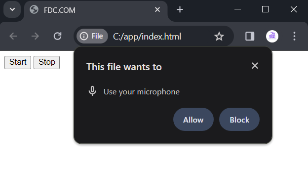

API-ul Web Speech pentru Recunoașterea Vorbirii.
Recunoașterea vorbirii este gestionată de obiectul SpeechRecognition. Pentru a-l obține, se utilizează
proprietatea webkitSpeechRecognition a obiectului global
window, prin care putem verifica suportul pentru
recunoașterea vorbirii de către browserul curent:
|
if(window.webkitSpeechRecognition) {
console.log("Recunoașterea vorbirii este suportată");
} else {
console.log("Recunoașterea vorbirii NU este suportată");
}
// O metodă alternativă de
verificare
if("webkitSpeechRecognition" in window) {
console.log("Recunoașterea vorbirii este suportată");
} else {
console.log("Recunoașterea vorbirii NU este suportată");
}
|
Prefixul webkit în
numele proprietății sugerează că această proprietate este suportată doar
în browserele pe baza motorului WebKit. Astfel, în realitate, în browserele pe baza
WebKit, recunoașterea va fi efectuată cu ajutorul obiectului webkitSpeechRecognition, nu
SpeechRecognition.
Interfața SpeechRecognition oferă o serie de proprietăți pentru configurarea recunoașterii:
- grammars: returnează și
setează o colecție de obiecte SpeechGrammar, care reprezintă gramaticile utilizate
- lang: returnează și setează
limba de recunoaștere. Dacă nu este specificată, se utilizează valoarea
implicită a atributului lang al elementului rădăcină `<html>`
- continuous: determină dacă
rezultatele sunt returnate continuu pentru fiecare recunoaștere (true) sau doar un singur rezultat
(false). Implicit, este returnat doar un singur rezultat
- interimResults: determină dacă
trebuie returnate rezultate interimare (true) sau nu (false). Rezultatele interimare sunt rezultate care
încă nu sunt finale (de exemplu, proprietatea SpeechRecognitionResult.isFinal are valoarea
false)
- maxAlternatives: setează numărul
maxim de alternative de recunoaștere furnizate pentru fiecare rezultat. Valoarea implicită
este 1
Pentru controlul recunoașterii, pentru SpeechRecognition sunt definite trei metode:
- abort(): întrerupe recunoașterea,
nu permite serviciului de recunoaștere să asculte sunetul de intrare și nu
încearcă să returneze SpeechRecognitionResult
- start(): inițiază
recunoașterea
- stop(): oprește recunoașterea, nu
permite serviciului de recunoaștere să asculte sunetul de intrare și încearcă
să returneze SpeechRecognitionResult folosind sunetul înregistrat până în
acel moment
După inițierea recunoașterii vorbirii cu metoda start(), în timpul recunoașterii pot apărea diferite
evenimente:
- audiostart: se activează când începe captarea
sunetului. Disponibil prin proprietatea onaudiostart
- audioend: se activează când se încheie captarea
sunetului. Disponibil prin proprietatea onaudioend
- end: se activează după deconectarea serviciului de
recunoaștere. Disponibil prin proprietatea onend
- error: se activează la apariția unei erori. Disponibil
prin proprietatea onerror
- nomatch: se activează când serviciul de
recunoaștere returnează un rezultat final în caz de recunoaștere
nereușită (gradul de recunoaștere nu corespunde pragului stabilit). Disponibil prin
proprietatea onnomatch
- result: se activează când serviciul de recunoaștere
returnează un rezultat - un cuvânt sau o frază. Disponibil prin proprietatea
onresult
- soundstart: se activează când este detectat sunetul
(indiferent dacă este vorbire sau zgomot aleator). Disponibil prin proprietatea onsoundstart
- soundend: se activează după terminarea detectării
sunetului. Disponibil prin proprietatea onsoundend
- speechstart: se activează când serviciul de
recunoaștere a detectat vorbirea și a început recunoașterea sunetului. Disponibil
prin proprietatea onspeechstart
- speechend: se activează când serviciul de
recunoaștere a terminat de detectat vorbirea. Disponibil prin proprietatea onspeechend
- start: se activează când serviciul de recunoaștere
a început să asculte sunetul. Disponibil prin proprietatea onstart
Pentru a accesa rezultatul recunoașterii vorbirii, se
înregistrează un handler pentru evenimentul result.
|
const recognition = new webkitSpeechRecognition();
recognition.onresult =
function(event){
const results = event.results; // obținem rezultatul recunoașterii
console.log(results);
// lista SpeechRecognitionResultList
}
|
Parametrul funcției-handler reprezintă tipul SpeechRecognitionEvent, de unde, prin proprietatea results, se pot obține rezultatele recunoașterii sub forma
unei liste SpeechRecognitionResultList. Fiecare
înregistrare din această listă reprezintă un obiect SpeechRecognitionResult și conține una sau mai multe variante
de recunoaștere a vorbirii (obiecte SpeechRecognitionAlternative) în cazul în care
recunoașterea vorbirii a fost ambiguă.
|
const recognition = new webkitSpeechRecognition();
recognition.onresult =
function(event){
const results = event.results; // obținem lista de rezultate
const firstResult =
results[0]; //
obținem primul rezultat recunoscut
const firstAlternative = firstResult[0]; //
obținem prima variantă de recunoaștere
}
|
Fiecare alternativă (obiect SpeechRecognitionAlternative), la rândul
său, are două proprietăți: transcript (conține textul recunoscut) și confidence (nivelul de încredere, în intervalul de la 0 la 1). Prima alternativă
reprezintă rezultatul cu cea mai mare probabilitate.
|
const recognition = new webkitSpeechRecognition();
recognition.onresult =
function(event){
const results = event.results; // obținem lista de rezultate
const firstResult =
results[0]; //
obținem primul rezultat recunoscut
const firstAlternative = firstResult[0]; //
obținem prima alternativă de recunoaștere
const transcript =
firstAlternative.transcript; // textul recunoscut
const confidence = firstAlternative.confidence; // nivelul de încredere
console.log(transcript);
console.log(confidence);
}
|
Pentru demonstrație, definim următoarea pagină web:
|
<!DOCTYPE html>
<html>
<head>
<meta charset="utf-8" />
<title>FDC.COM</title>
</head>
<body>
<button id="startBtn">Start</button>
<button id="stopBtn">Stop</button>
<script>
const recognition = new webkitSpeechRecognition();
let index = 0;
recognition.onresult = function(event){
const results = event.results; // obținem lista
de rezultate
const firstResult = results[index++]; // obținem
rezultatul recunoscut
const firstAlternative = firstResult[0]; //
obținem prima alternativă de recunoaștere
const transcript =
firstAlternative.transcript; // textul recunoscut
const confidence = firstAlternative.confidence; // nivelul de încredere
console.log(transcript);
console.log(confidence);
}
// la apăsarea butonului
Start, inițiem recunoașterea
document.getElementById("startBtn").addEventListener("click", ()=>{
if(window.webkitSpeechRecognition) {
recognition.continuous =
true;
recognition.lang = "ru";
// recunoașterea vorbirii în limba
rusă
recognition.start();
// începem recunoașterea
} else {
console.log("Recunoașterea vorbirii NU este suportată");
}
});
// la apăsarea
butonului Stop, oprim recunoașterea
document.getElementById("stopBtn").addEventListener("click", ()=>recognition.stop())
</script>
</body>
</html>
|
În acest caz, prin apăsarea butonului Start, inițiem
recunoașterea vorbirii în limba rusă. Rezultatele recunoașterii sunt afișate
în consolă. Prin apăsarea butonului Stop, oprim recunoașterea.
Pentru a obține rezultatul, definim variabila index. La fiecare
declanșare a evenimentului result, în lista
de recunoașteri va fi adăugat un nou rezultat de recunoaștere. Incrementând variabila
index, vom putea obține rezultatul recunoscut la declanșarea ulterioară a evenimentului
result după acest index.
Este important de menționat că, la inițierea recunoașterii,
browserul va solicita utilizatorului permisiunea de a folosi microfonul.

Prin urmare, dacă utilizatorul dorește să folosească
recunoașterea vocală, trebuie să permită browserului accesul la microfon.